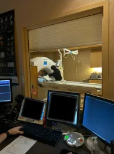
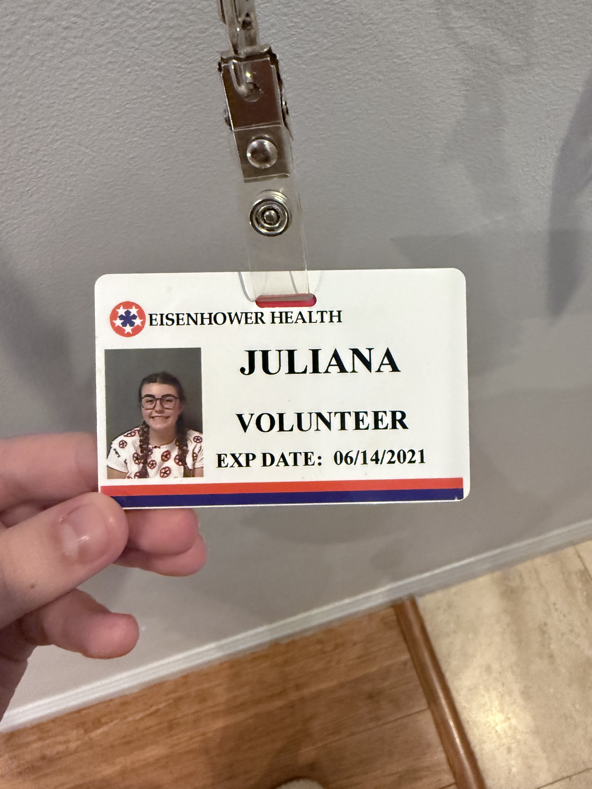
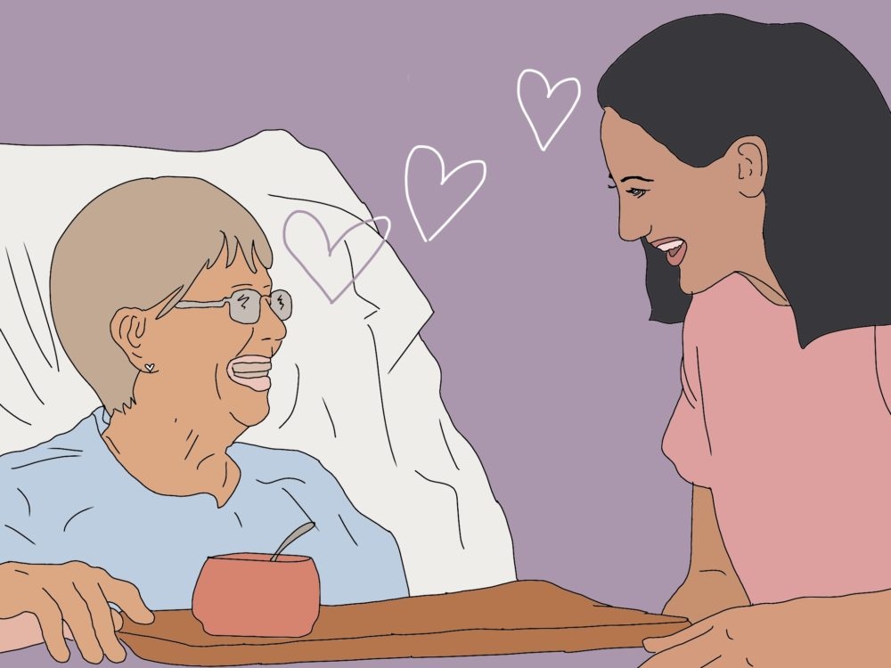
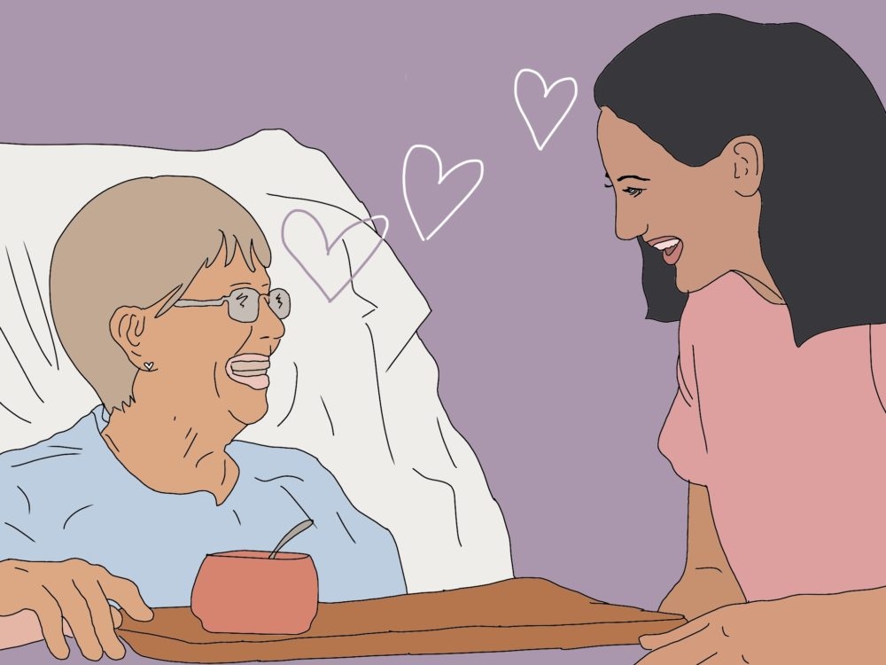
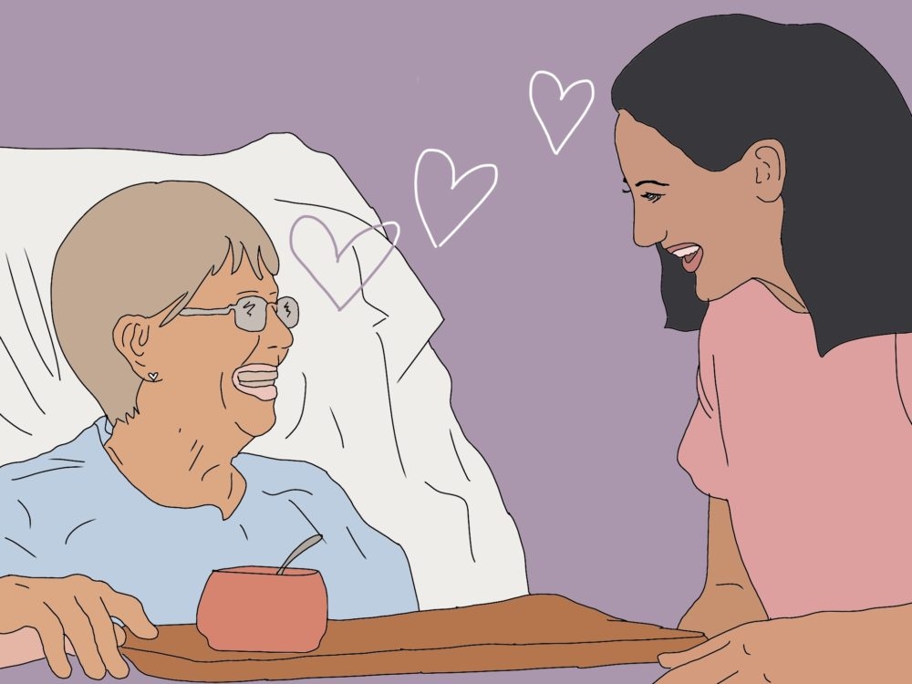

Juliana Elly
My name is Juliana Elly and I am a third year student at the University of California Riverside. I am majoring in psychology and I have a passion for clinical psychology and for speech language pathology. A little background about me- I am 20 years old and I have lived in California my entire life, growing up in the Coachella Valley and attending catholic school throughout my K-12 years. My parents are both from the medical field, my dad being a Radiologist and my mom being a Registered Nurse, which is what I believe has also struck my want to go into a profession that involves helping people. Since both of my parents are in the medical field, it has also open up different doors for me, giving me opportunities to explore different medical professions. Even though I have had these chances to explore other professions, I have stuck with the drive to want to pursue a profession in Psychology since Mental Health is something that is very important to me, which I hold close to my heart. Ever since I was young, I have had a passion for the way the human brain works and how it controls our behavior and speech. I have always been interested in supporting those who struggle with mental health and I want to provide meaningful support to those who are undergoing negative mental health challenges. My goal is to pursue a career in either clinical psychology or speech language pathology.
I have had the opportunity to volunteer in a local hospital over the summer where I got to gain firsthand experience in the medical field, and I am planning on continuing my volunteer experience during this summer and whenever I have time. This experience has broadened and deepened my understanding of patient care and has also driven me to become more knowledgeable in these two subjects. Interacting with patients and healthcare professionals gave me an important insight on how to treat patience through empathy, active listening, and learning how to operate through different situations. Being able to properly take care of patients and address their needs and concerns is an important necessity in this field, to ensure that the patients receive the best care possible.
Beyond both my academic and volunteer experiences, I also enjoy learning and reading about new scientific discoveries about the human body, and seeing the new techniques that professionals use to help ensure their patients' health stays in tip top shape. I am eager to continue developing my skills in this field and can’t wait to obtain more hands-on experience to be able to help others.Through my strong academic background and real world experience, I am excited to see where the future takes me in the world of psychology, hopefully becoming a clinical psychologist or speech language pathologist. Even if changes in the future, I hope that I will be able to contribute my help and skills to the world of mental health, supporting those who are in need.
Experience
Volunteer Work
• Hours of volunteer work at local hospital
• Trained a guide dog puppy until he was a guide dog for the blind
Athlete
• Volleyball athlete
• Played Junior Varsity
• Two hour practices almost everyday besides game day, school and club volleyball. Games were out of town and at home for school. For club, all games and tournaments were out of town and sometimes out of state.
• Consistent until suffered back injury that stopped me from playing
Education
UC Riverside
Portfolio


 

